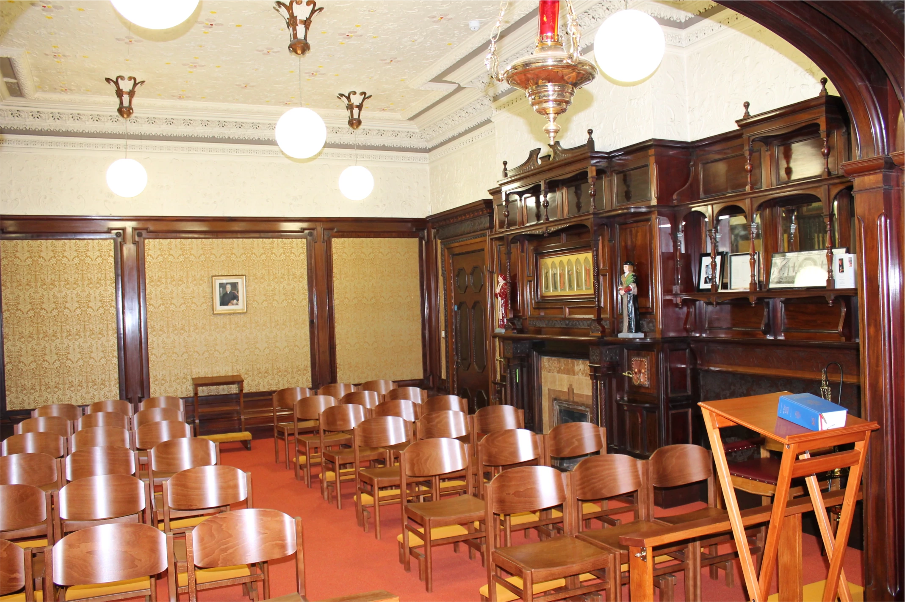
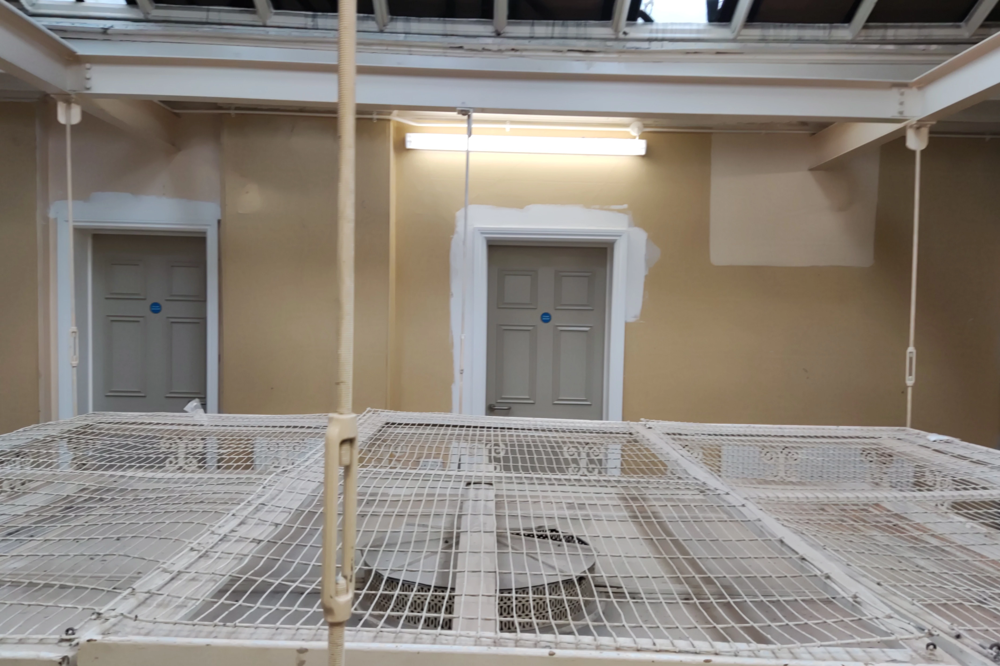
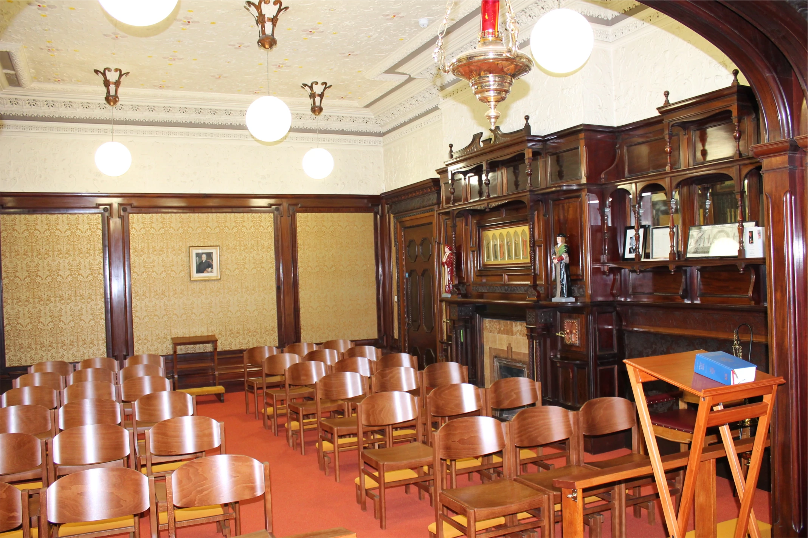
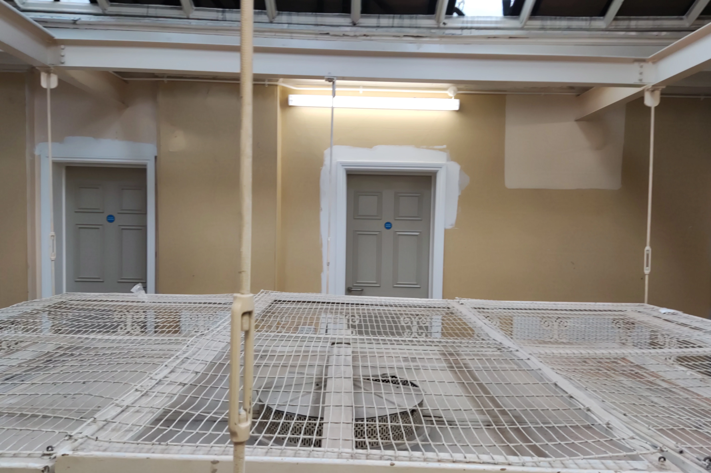

Virtual Tour
Take a virtual video tour of the Outwood House.
The History of Outwood
Read our book on the history of Outwood House.
Phase Two
Learn more about phase two of the Outwood House restoration project.
Take a virtual video tour of the Outwood House.
Read our book on the history of Outwood House.
Learn more about phase two of the Outwood House restoration project.